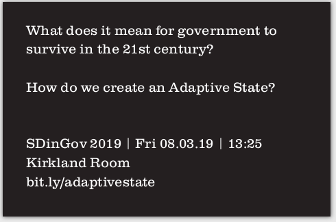

You can find me on Medium, Twitter or LinkedIn. Here's a CV, if that's what you're into.
I've documented some (unfinished) thoughts on my first Service Design in Government experience here.
Below is the hour-long talk I did at Service Design in Government 2019.

UPDATE 13.03.19: Around 11:40 in the video, I discuss the complexities of 'breaking up Facebook' (largely from a UK perspective).
The same day, Elizabeth Warren publishes an outline proposal for how to do just that.
Pending more detailed scrutiny of her proposals, I'm fully prepared to #standcorrected on this one.
I'll try and post a transcript when I have a bit of time.